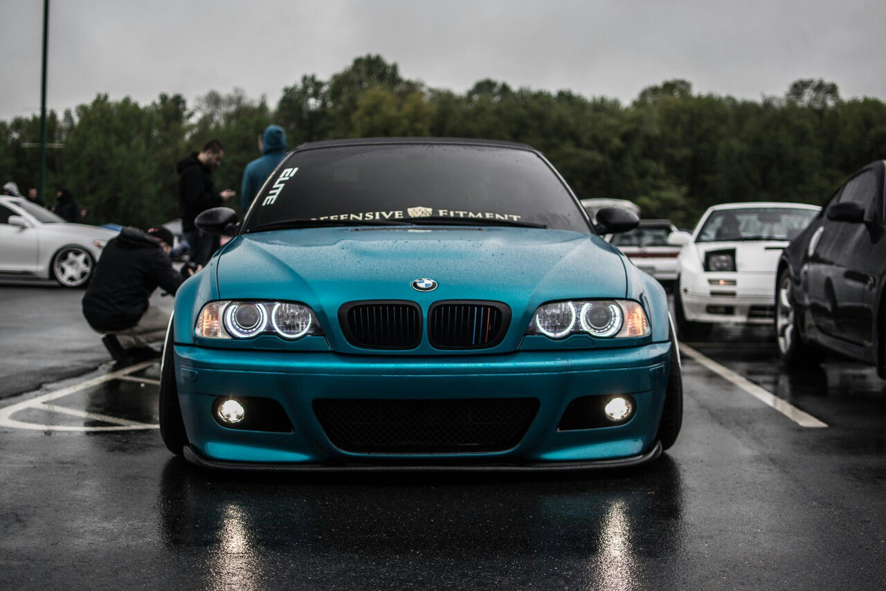

Главная страница
Дорогой друг! Если ты попал на этот сайт, то тебя явно интересует история фирмы BMW, модельный ряд и всё, что связано с этой темой. Я надеюсь, что сайт даст ответы на все твои вопросы или откроет тебе любовь к данной модели.
 BMW — это история. История звуков. Звуков моторов, отдающих всю свою мощность ради одной цели. История запахов. Запахов, витающих в воздухе, коктейлей из бензина, масла и резины. История линий. Набросков, рисунков и чертежей, воплощенных в строгие формы. История смелости, отваги, рекордов, достижений. История побед. И ты хочешь стать частью этой историй. Ты становишься ею… Одерживая маленькие победы каждый день.
BMW — это история. История звуков. Звуков моторов, отдающих всю свою мощность ради одной цели. История запахов. Запахов, витающих в воздухе, коктейлей из бензина, масла и резины. История линий. Набросков, рисунков и чертежей, воплощенных в строгие формы. История смелости, отваги, рекордов, достижений. История побед. И ты хочешь стать частью этой историй. Ты становишься ею… Одерживая маленькие победы каждый день.
BMW — прекрасная машина. Ты никогда не устаешь от нее. Это как лучший друг, что ли. Друг, с которым у тебя одни интересы и даже какой-то общий стиль жизни. Это бесконечное движение, скорость, где-то даже экстрим. Это твой мир. Мир, как мы знаем, состоит из мелочей, так и в этом маленьком мире под названием BMW всё на своих местах: средняя консоль приятно развернута к тебе, к водителю, ведь это твой автомобиль.
Мягкий ход, острый руль, напольная педаль газа, мягкая подсветка приборов, кресла «моторспорт» или «комфорт», звук двигателя, а не дороги, можно и с приятно звучащей музыкой, задний привод, можно полный. Здесь всё твое, тебе комфортно и приятно управлять машиной. Каждый километр – наслаждение дорогой, машиной, жизнью, в конце концов. Ты становишься счастливее и немножечко добрее. Ты просто нажимаешь на газ.